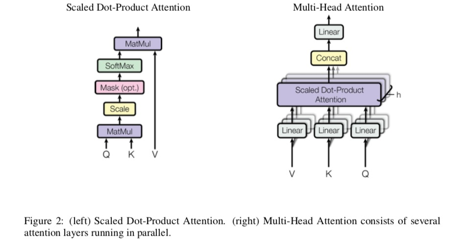
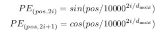
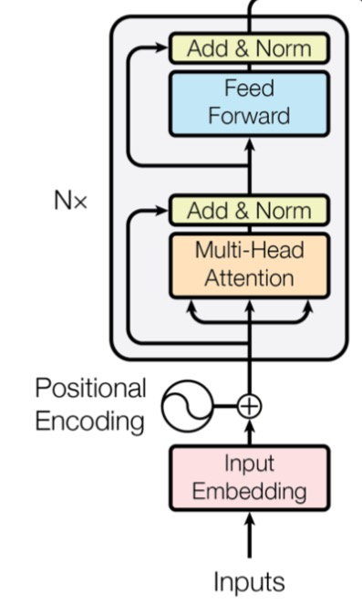
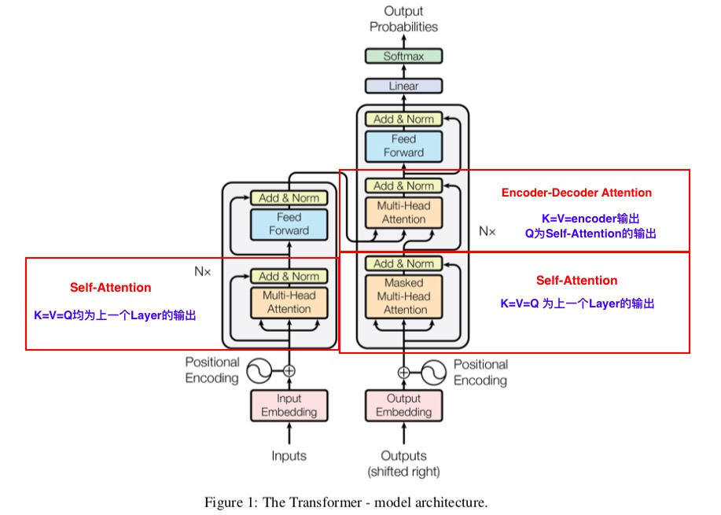

本文其实写的有些迟到，毕竟这是谷歌17年6月的工作，不过好戏不怕晚，这项工作亮点在于不用CNN,RNN也能得到STOA的效果, 而理论上的指导意义在于 + Self-Attention思想 + Transformer 结构
这里模型结构强推另一个博客，讲的十分清楚，按照数据的处理流程来讲，十分清楚。 Transformer 其实Transformer 还是一个Seq2Seq 的结构，但是Transformer 却打破了一种观点，Seq2Seq 一定是基于RNN，LSTM 来进行的。
Encoder 部分
Encoder的组件 - Multi-Head Attention 组件 - Feed-Forward 组件
我这里用组件，是因为每一个Multi-Head Attention & Feed-Forward 操作之后都会紧跟 - residual connection - layer normalization 这里对这些操作放在介绍完Multi-Head Attention 和 Feed-Forward之后谈
Multi-Head Attention组件
 反映到公式上 \[\text{MultiHead}(Q, K, V) = \text{Concat}(head_1, \dots, head_h)W^{O}\] where \[\text{head}_i = \text{Attention}(QW_i^Q, KW_i^K, VW_i^V)\]
and \[\text{Attention}(Q, K, V) = \text{softmax}(\frac{QK^T}{\sqrt{d_v}})V\] 其中 对于Self-Attention来讲\(K = Q = K \in R^{d_{model}}\) ,\(W_i^Q \in R^{d_{model} \times d_k}\), \(W_i^K \in R^{d_{model} \times d_k}\), \(W_i^V \in R^{d_{model} \times d_V}\)
这么做的Motivation是什么
Instead of performing a single attention fuction with \(d_{model}\) dimensional keys, values and queries, we found it benefical to linearly project the queries, keys and values h times with different learned linear projects to \(d_k, d_k\) and \(d_v\) dimensions respectively.
Feed-Forward组件
每一个Multi-Head Attention之后都会紧跟Feed-Forward组件, Feed-Forward 相对简单,只有两层，第一层后加了一个ReLU. 用公式表示: \[FFN(x) = max(0, xW_1 + b_1) W_2 + b_2\] 其中 \(x \in R^{lenght \times d_{model}}, W_1 \in R^{d_{model} \times d_m}, W_2 \in R^{d_m \times d_{model}}\)
Residual Connection & Layer Normalization
庖丁解牛这里讲清楚这两个操作 + Residual Connection 是针对一个网络函数来讲，我们假定这个网络的输入为x,输出为Layer(x), 那么Residual Connection对于这个Layer的操作就是\[Residual(x) = x + Layer(x)\]， 残差网络是为了让深层网络梯度更易传播，可以理解为为了训练方便采取的策略(这里我的理解不一定深入，希望同道能指出) + Layer Normalization 这个也是为了让训练稳定采取的策略，这里Normalization的策略很多Batch Normalization, Layer Normalization等,落实到代码上可能就是一个调用库的操作 \(LayerNorm(x)\) 最后经过Residual Connection和 Layer Normalization得到的操作就是 \[\text{LayerNorm}(x + SubLayer(x))\]
一个Multh-Head Attention组件 和 一个Feed-Forward组件 组成一个Layer, 而多个Layer 组成了Encoder。(Encoder is composed of a stack of N=6 identical layers) 在这里我们捋一下输入和输出: 对于Layer 的输入其维度为 \(R^{\text{length} \times {d_{model}}}\), 而经过 (Multi-Head Attention, Feed-Forward) 仍然是\(R^{\text{length} \times {d_{model}}}\)。 ### 关于Position Embedding Attention Is All You Need 的很大的亮点在于没用RNN的结构，但是对于语言这样的序列数据，Position信息还是很重要的，为此需要人为的引入Position Embedding信息，原文直接就给了公式，我说不上来这是怎么得到,这里仅仅记录一下有这个Position Embedding 
基本上到这里，对Encoder的结构应该很熟悉，参见下图 我这里最后从下到上捋一遍: Input进来，先进行词嵌入(Input Embedding), 然后加入位置信息(Position Embedding), 而后进入Self-Attention模块(Multi-Head Attention), 注意图中的Add & Norm 其实也就是指的Residual & Layer Normalization. 完成了Self Attention 之后记住此时输出仍然和原来输入维度是一样的仍然是\(R^{d_{model}}\)。 接下来就是Feed-Forward 组件，同样的 Add & Normalization一样就是 Residual & Layer Normalization。这时候输出仍然是与输入维度是一样的。如果把上述所有操作看成一个Big Layer, 这些Big Layer 叠加多次(谷歌论文是叠加了6次，就得到了Encoder结构) ## Decoder的结构 有了前面Encoder的讲解，后续相对简单,为了便于理解我贴一张Transformer的整体结构图 先是Self-Attention， 然后是Encoder-Decoder Attention(其实也就是传统的Seq2Seq中的Attention 机制，可以参考我之前的博文Attention机制 我们不妨🤔一下：这个流程是怎样的，那机器翻译举例"I like eating apples", 翻译“我 喜欢 吃 苹果”，问题来了在Encoder中， "like" 注意到 (attends to)"I" "eating" 固然没有问题,毕竟输入语料都一下子给到Encoder, like 同时注意到上文的 “I” 和 下文的“eating”, "apples" 这显然是好事，这样Attends得到的like 显然更加有重点。 然而，对于decoder 来讲，如果从 start 要翻译得到“我”，而同时注意到接下来是"我" “喜欢” “吃” “苹果”, 那么翻译“我”时，直接从下一个序列拿下来第一个“我” 即可，同理，翻译“喜欢”时候(注意这时候是decoder输出了“我”)，注意到接下来是"喜欢"，那么直接copy 就行了，根本就不需要训练了。看起来貌似说的通，但是训练的模型是为了解决任务，当训练完成后，给了一个source 语句，此时没有target 语句，显然这时候模型就没有办法了。因此，有以下注意点 <%centerquote%> decoder的Self-Attention组件与encoder中的不同，decoder中的Self-Attention只能注意到(attends) 当前output 之前的位置的output信息<%centerquote%> 也就是譬如“我” “喜欢”，接下来翻译“吃”，输入是“喜欢” & “我”的Self-Attention。
除此之外,Decoder其实有两种Attention + Self-Attention + Encoder-Decoder Attention
可以着重理解一下，至于K, V, Q 的具体含义，可以参考我之前的博文Attention的泛化 ## Loss Function 对于两个概率分布的Loss Function， 既可以用Cross-Entropy 也可以用 Kullback-Leibler Divergence。对于概率分布p和概率分布q而言，他们的Cross-Entropy可以定义为 \[CE_p(q) = -E[ q(x) \log(p(x))]\]
对现有工作的启发
现在Transformer 已经作为Tensorflow的一个模块上线了 Tensor2Tensor。而Attention也红火了一段时间，尤其是提出的Self-Attention思想，可能是相比于模型结构更加能引人思考之处。